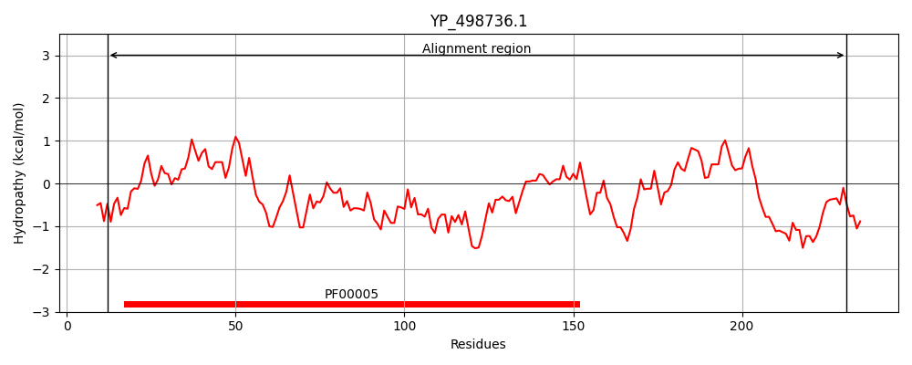
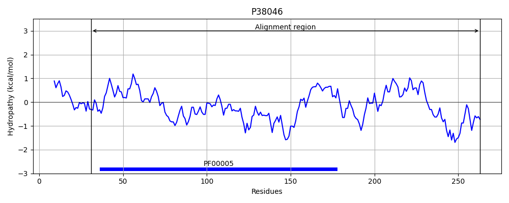
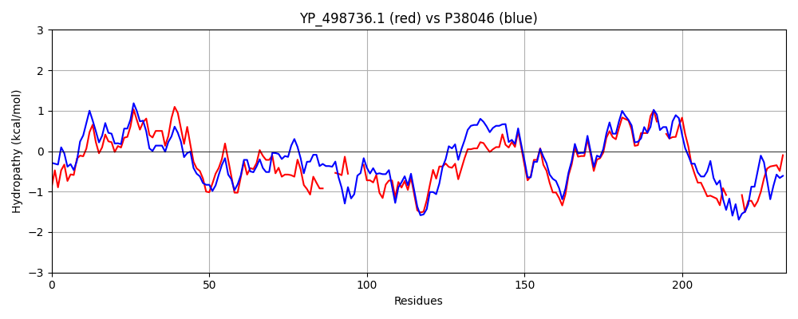

Hit Accession: P38046
Hit TCID: 3.A.1.16.1
Hit Description: gnl|BL_ORD_ID|10153 gnl|TC-DB|P38046|3.A.1.16.1 Nitrate transport ATP-binding protein NRTD - Synechococcus sp. (strain PCC 7942) (Anacystis nidulans R2).
Mach Len: 233
e:0.000000
Query TMS Count : 0
Hit TMS Count: 0
TMS-Overlap Score: 0.000000
Predicted Substrates:CHEBI:7585;nitrite, CHEBI:71263;nitrate
BLAST Alignment:
Score: 469 , Bit scores: 185 bits, E-value: 4.5e-58, Alignment length: 233, Percentage identity: 41
Query: 12 GSHKVIHNFNLDISKGEIVTFIGKSGCGKSTLLNIIGGFIHPSSGRVIIDNEIKQQPSPDCLMLFQHHNLLPWKTINDNIRIGLQQK---ISDEE----INAQLKLVDLEDRGKHFPEQLSGGMKQRVALCRAHVHKPNVILMDEPLGALDAFTRYKLQDQLVQLKHKTQSTIILVTHDIDEAIYLSDRIVLL--GEGCNIISQYEITASHPRSR----NDSHLLKIRNEIME 231
G + I + NL + +GE + IG SGCGKSTLLN++ GF P+SG V +D + Q+P PD +++FQ+++LLPWK+ DNI + ++ +S E ++ L+LV L + P+QLSGGMKQRVA+ RA +P V+++DEP GALDA T+ +LQ++L+ + + + T++++THDIDEA++L+DR+V++ G I EI PR R D ++R E ++
Sbjct: 31 GPYVAIEDVNLSVQQGEFICVIGHSGCGKSTLLNLVSGFSQPTSGGVYLDGQPIQEPGPDRMVVFQNYSLLPWKSARDNIALAVKAARPHLSTSEQRQVVDHHLELVGLTEAQHKRPDQLSGGMKQRVAIARALSIRPEVLILDEPFGALDAITKEELQEELLNIWEEARPTVLMITHDIDEALFLADRVVMMTNGPAATIGEVLEIPFDRPREREAVVEDPRYAQLRTEALD 263 | Protein Hydropathy Plots: |
|---|
|  |  |
Pairwise Alignment-Hydropathy Plot:
|
|---|
|  |